Track software, memberships, portals, vendors, payment owners, departments, monthly cost, annual cost, renewals, and cancellation deadlines.
OrgAssets Help Center
Know who owns, uses, and has access to every digital asset
OrgAssets connects your employee org chart to systems, assets, vendors, subscriptions, access assignments, cleanup actions, reports, imports, users, backups, and branded PDF exports.
Recommended workstation use: 1366 x 768 minimum, with 1440 x 900 or larger preferred for org chart,
reporting, import, and settings workflows. Smaller screens can be used for quick review, but dense admin
work is best on a larger monitor.
1. What OrgAssets Does
OrgAssets gives the business one operating view of digital assets, accounts, subscriptions, vendors, owners, users, renewals, spend, admin access, and cleanup work. It helps leadership, bookkeeping, operations, and IT see what the company pays for, who owns it, who uses it, and what needs attention.
Find former staff access, contractor access past end date, admin-level accounts, owner gaps, and systems that still need review.
Assign clear owners, reduce unused seats, prevent surprise renewals, and create clean reports for management, bookkeeping, audits, and insurance reviews.
Quick reference order of operations
- Start with Dashboard to see the current health of people, assets, renewals, cleanup actions, and reports.
- Set up Departments, Roles, and Vendors before heavy data entry so people, systems/assets, and reports use consistent values.
- Add or review People with the correct department, manager, employment type, status, and role boxes.
- Add Systems / Assets with owner, vendor, department, cost, renewal, seat, URL, and review information.
- Create Assignments to connect people to systems/assets with assignment type, access level, dates, and status.
- Use Offboarding when a person leaves or changes role so every active assignment can be reviewed and revoked from one checklist.
- Organize the Employee Org Chart by confirming managers, using Organize Tree for reporting changes, and choosing card detail options.
- Review Action Center for owner gaps, renewals, stale reviews, unused seats, former staff access, and contractor cleanup.
- Run Reports and export PDFs after filters and multi-column sorting match the review packet you need.
- Use Imports and Settings for admin maintenance, branding, users, defaults, audit trail exports, backups, and bulk data updates.
OrgAssets should never store passwords, API keys, MFA seeds, recovery codes, private keys, or credential notes.
Track ownership and access assignments, not secrets.
2. Sign In
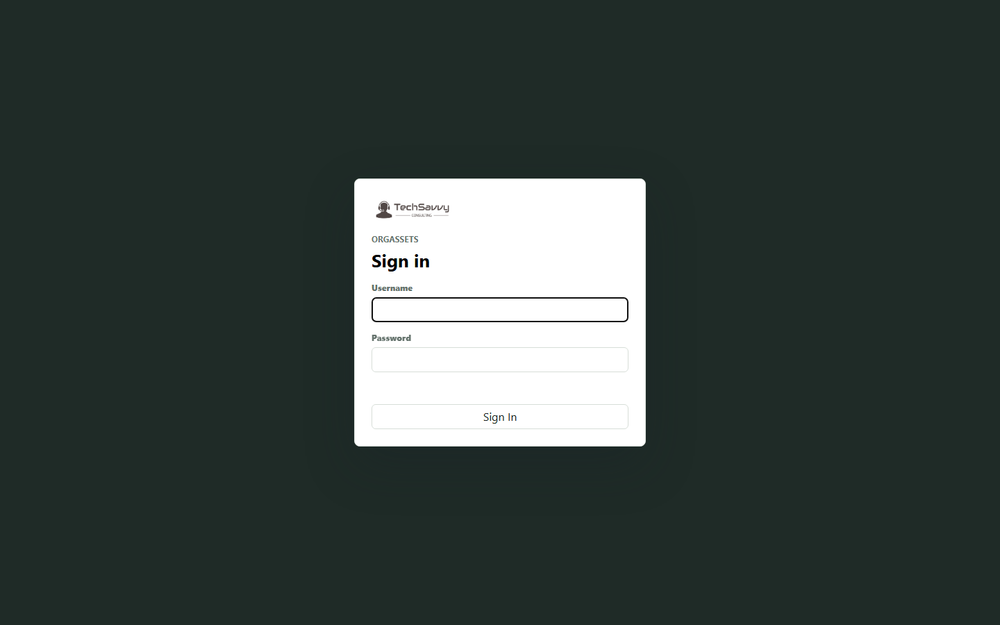
- Open the OrgAssets portal link provided by your implementation or support team.
- Sign in with your assigned username and password.
- Use an admin account for Settings, Imports, Users, report branding, backups, and demo-data controls.
- Use a standard user account for day-to-day review, directory, systems/assets, assignments, org chart, actions, and reports.
If you cannot sign in or do not see the areas you need, contact your OrgAssets administrator or support team.
3. Daily Navigation and Table Controls
Most work starts from the left navigation, Dashboard, global search, View Rules cards, or report links. Admin users can access Settings and Imports. Standard users are limited away from settings, import, and backup areas.
Recommended daily workflow
- Start at Dashboard to review the command queue, dashboard table panels, and report deck.
- Use View Rules to jump into Staff, Contractors, Renewals, or Actions with the right table filters already applied.
- Open the detail panel from any View button, report value, org chart card, system name, person name, vendor, or owner link.
- Use the section tables for maintenance work, then run Reports or Export PDF when management needs a clean review packet.
- Global Search filters major tables and dashboard views by visible text.
- View Rules jump to Staff, Contractors, Renewals, and Actions. Staff counts exclude contractors.
- Find in list searches inside the current table after global search is applied.
- Column headers sort table data. Reports also support multi-column sort.
- Dropdown filters narrow tables by fields such as department, status, vendor, type, access level, date window, and cost band.
- Show limit controls how many rows appear, including compact 3 and 5 record options for smaller screens.
- View and text links open detail panels or jump to the correct section.
4. Dashboard
The Dashboard is the command view for daily review. It summarizes people, systems/assets, monthly cost, renewals, cleanup work, admin access, the command queue, dashboard table panels, and the report deck.
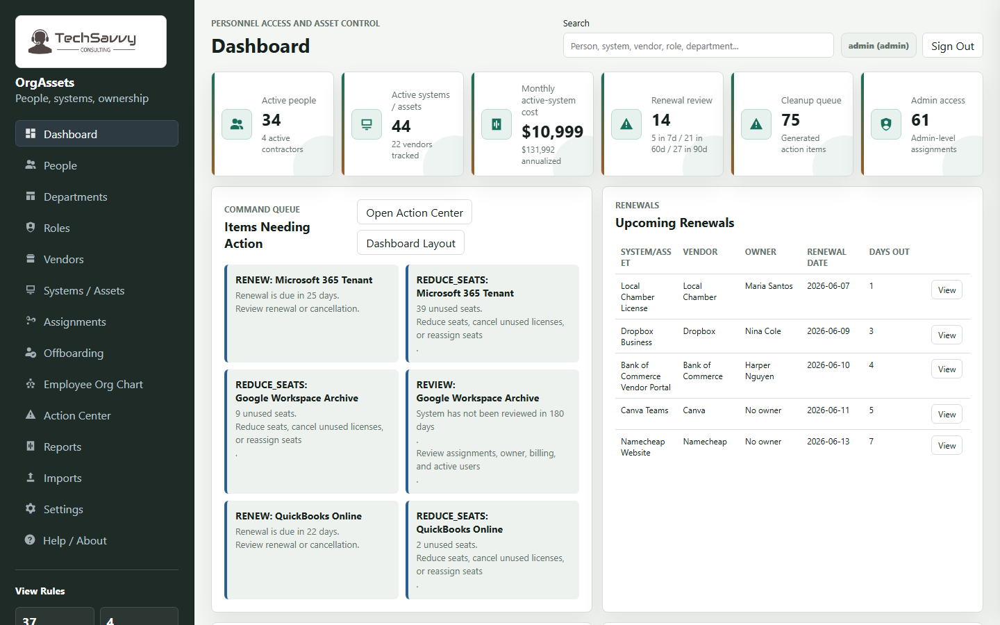
What to review first
- Metric cards are shortcuts. Click People, Systems, Cost, Renewals, Cleanup, or Admin Access to open the related module or report.
- Command Queue is operational. Click action labels, system names, or recommendation text to review cleanup work.
- Focused tables show risk areas. Renewals, contractor access, former staff access, high cost systems, and no-owner systems appear when enabled in Settings.
- Report Deck opens key reports. Jump into cleanup, renewals, former staff, contractors, no owner, spend, org roster, and admin access reports.
5. People Directory
The People page tracks staff, contractors, subcontractors, executives, owners, and vendor contacts. It is the source for reporting lines, roles, access assignments, and user account creation.
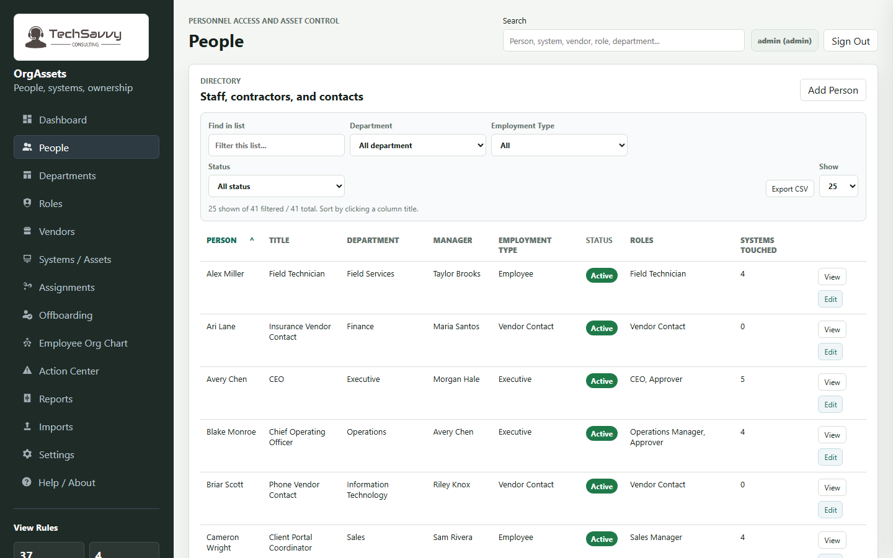
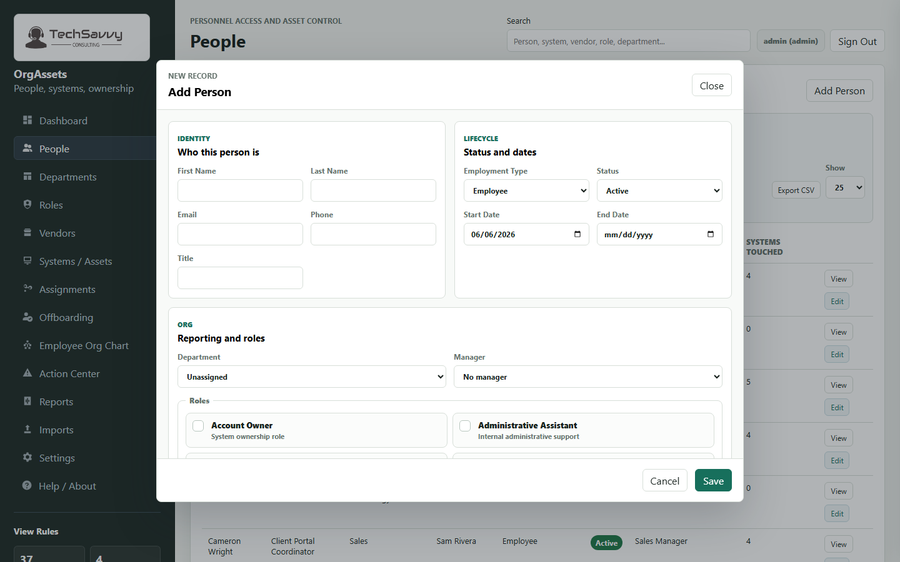
People fields
- Identity tracks first name, last name, email, phone, and title.
- Org fields connect each person to a department, manager, and one or more role cards.
- Lifecycle fields track employment type, status, start date, and end date for offboarding and contractor reviews.
- Use All, All Staff, and type filters. All includes contractors and staff. All Staff excludes contractors.
- Use role cards. Person records use clickable role boxes so multiple roles can be selected or cleared easily.
- People exports can be reimported. Export CSV from People and import it back through Imports with the People record type.
6. Departments
Departments organize people, managers, systems/assets, costs, and reports. They make it easier to filter the directory, assign ownership, review departmental spend, and understand where cleanup work belongs.
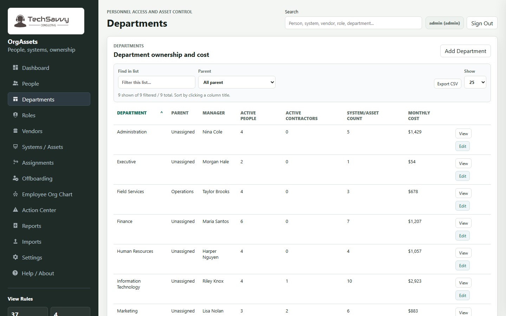
Department workflow
- Create departments early. People and systems/assets use departments for reporting, filtering, ownership, and cost review.
- Assign managers where known. Department managers provide useful context in directory and org chart reviews.
- Use parent departments when needed. Parent relationships help represent larger business areas without overcomplicating the employee org chart.
- Keep names consistent. Clean department names prevent duplicate filters and cleaner report exports.
7. Roles
Roles describe what people do in the business and how they participate in access, approval, billing, ownership, and review workflows. They are used by People, Employee Org Chart filters, and admin-access reporting.
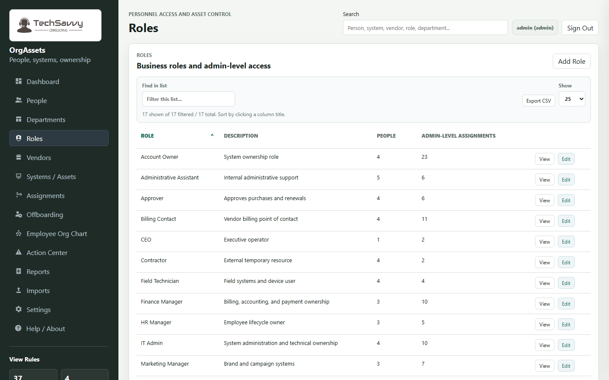
Role workflow
- Create reusable role labels. Examples include Owner, Approver, Account Owner, Billing Contact, IT Admin, Reviewer, and Department Manager.
- Assign roles on people records. People use clickable role boxes so multiple roles can be selected or cleared quickly.
- Use roles to filter the org chart. Role filters help isolate owners, approvers, admins, and other review groups.
- Keep roles business-friendly. Use labels managers and bookkeepers understand, not only technical access terms.
8. Vendors
Vendors are the external companies, providers, platforms, and service contacts behind systems/assets. Vendor records support renewals, system ownership, bookkeeping review, and cleanup reporting.
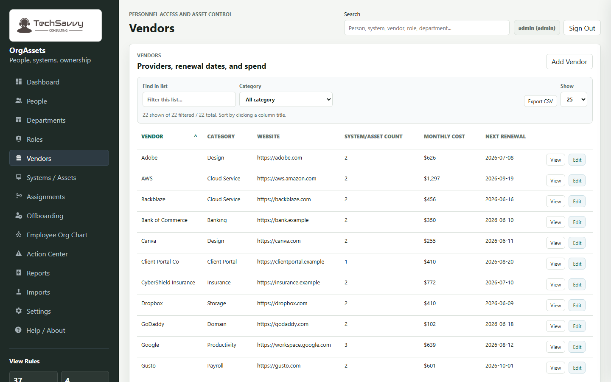
Vendor workflow
- Create vendors before systems/assets. This keeps asset records from using duplicate vendor spelling or one-off provider names.
- Track website and contact details. These fields help users find the correct portal or business contact during review.
- Use categories and renewal dates. Vendor context helps reports show what is coming due and where spend belongs.
- Export and reimport vendors. Vendor CSV exports can be updated and loaded back through Imports with the Vendors record type.
9. Systems / Assets
Systems / Assets covers software, subscriptions, memberships, licenses, domains, cloud accounts, banking portals, insurance portals, client portals, websites, hosting, phone systems, and other tools the business depends on.
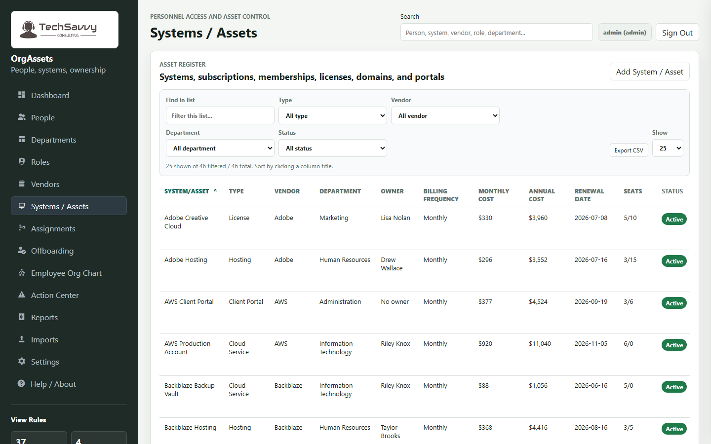
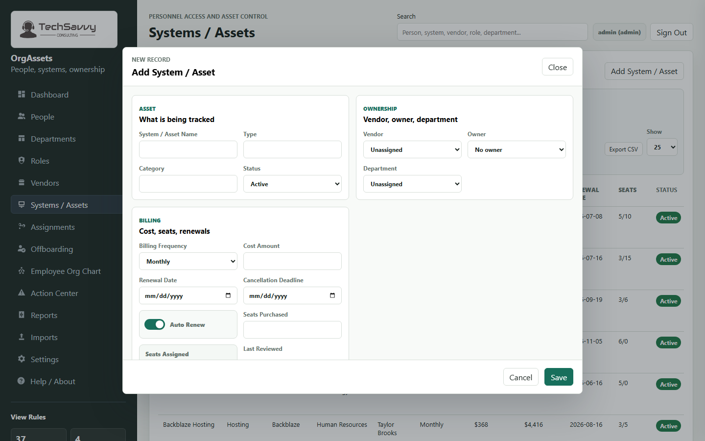
System / asset fields
- Add systems with existing values. Name, type, and category fields support editable picker suggestions to reduce duplicate variations. Type is the kind of asset, such as Software or Website; Category is the business grouping, such as Finance, Marketing, Backup, or Hosting.
- Ownership connects the system to a vendor, owner, and department. Setting an owner also keeps the Owner assignment aligned.
- Billing tracks billing frequency, cost amount, renewal date, cancellation deadline, auto renew, seats purchased, seats assigned, and last reviewed date.
- Assigned People lets admins assign users directly from the system window. New assignments use the selected assignment type and access level.
- Seats assigned are derived. Active assignment rows update assigned-seat counts automatically.
- System exports can be reimported. Friendly columns such as System/Asset, Vendor, Owner, Department, Monthly Cost, Annual Cost, and Seats map back into import fields.
10. Assignments
Assignments connect people to systems/assets. This access ledger powers systems touched, admin access, former staff access, contractor cleanup, seat counts, and many report links.
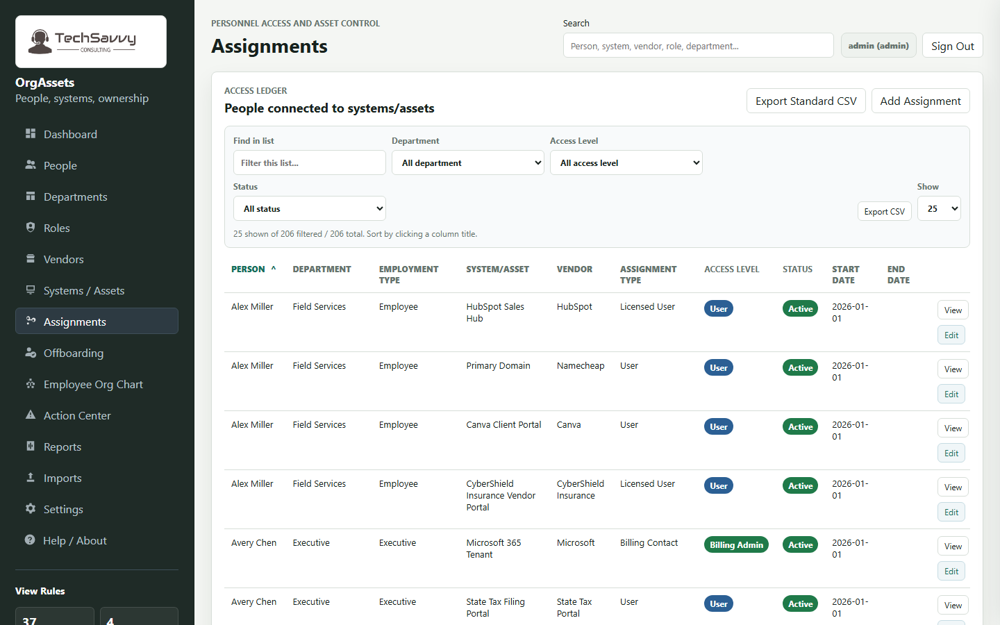
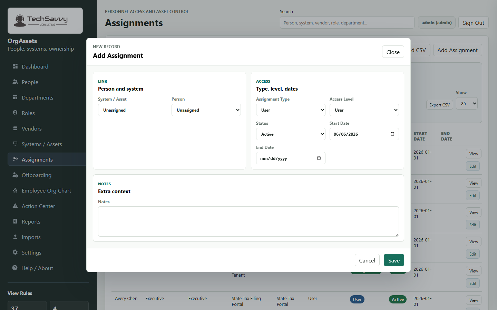
Assignment fields
- System / Asset and Person define the access relationship. OrgAssets prevents duplicate active assignments for the same person and system.
- Assignment type explains the relationship. Examples include Owner, Licensed User, Billing Contact, Technical Contact, Reviewer, and Approver.
- Access level explains risk. Owner, Admin, Billing Admin, Manager, User, Read Only, and No Access support admin-access reporting.
- Status controls cleanup. Active assignments for inactive people or ended contractors generate action items and reports.
- Assignments can be created anywhere. Add them from Assignments or assign people directly while editing a system/asset.
- Assignment exports can be reimported. Person and System/Asset names are resolved back to existing IDs during import.
- Standard CSV export creates a consistent assignment format for MSPs, bookkeepers, and local reporting utilities.
11. Offboarding
Offboarding gives admins one checklist for a selected person. It shows every active system, license, account, vendor portal, owner assignment, and admin-level access record tied to that person.
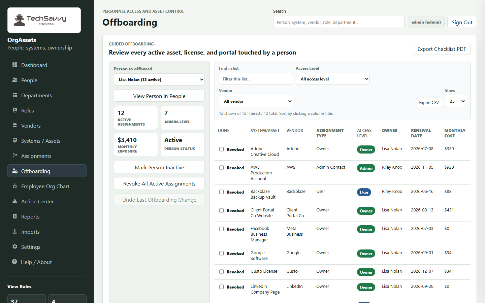
Offboarding workflow
- Select a person to see active assignments, admin-level exposure, monthly spend exposure, and current person status.
- Revoke individual rows with the Revoked checkbox when access has been removed from that system or portal.
- Revoke all active assignments when a full offboarding pass is complete and every active row should be marked Removed.
- Mark Person Inactive updates the person status and end date while preserving the person record for audit history.
- Export Checklist PDF creates a branded offboarding packet for managers, owners, or audit evidence.
- Audit trail events are recorded for offboarding revokes and status changes.
12. Employee Org Chart
The Employee Org Chart is the visual reporting tree. It supports department or whole-company views, role filters, density, card detail boxes, zoom, drag-and-drop organization, undo/redo, and PDF printable views.
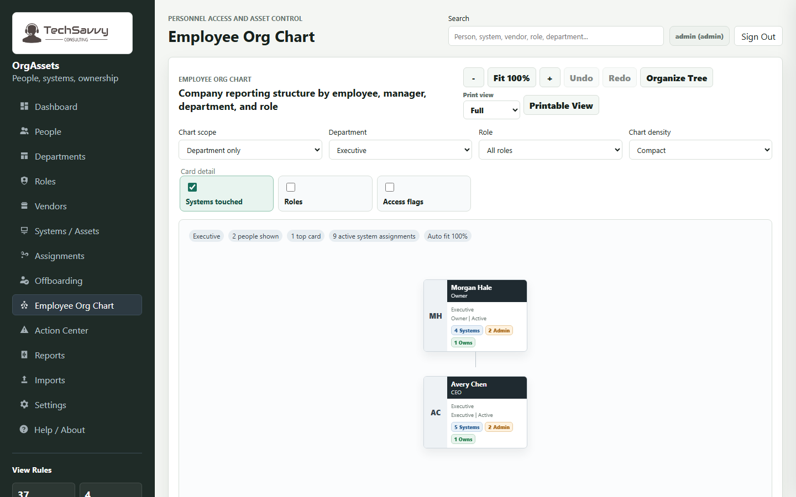
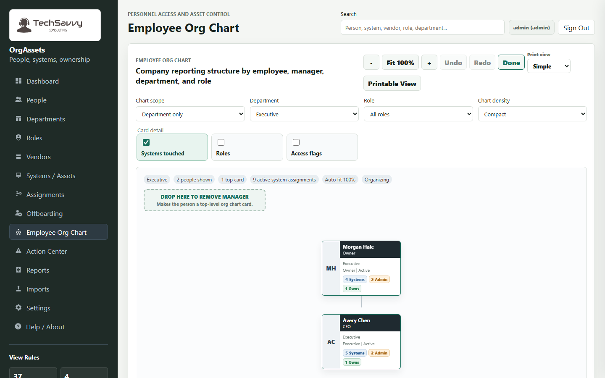
Org chart workflow
- Choose scope and filters. View the whole company or one department, then filter by role.
- Use card detail boxes. Systems touched, roles, and access flags are independent clickable boxes.
- Organize the tree. Turn on Organize Tree, drag a person onto a manager, or drop onto the Drop here to remove manager target to make that person a top-level card.
- Undo and redo tree edits. Undo and Redo step through the last three reporting-structure changes.
- Use Fit, plus, and minus. Fit returns to automatic zoom. Plus and minus switch to manual zoom.
- Export printable charts. Full exports the detailed card view with selected details. Simple exports a clean icon tree with head icons, names, and titles only.
13. Detail Panel
The detail panel is the slide-out drawer used for quick inspection. It opens from View buttons, text links, report rows, dashboard shortcuts, and org chart cards. Use it when you want to check related records without leaving your current table, report, or org chart view. Close it when you need the full screen back.
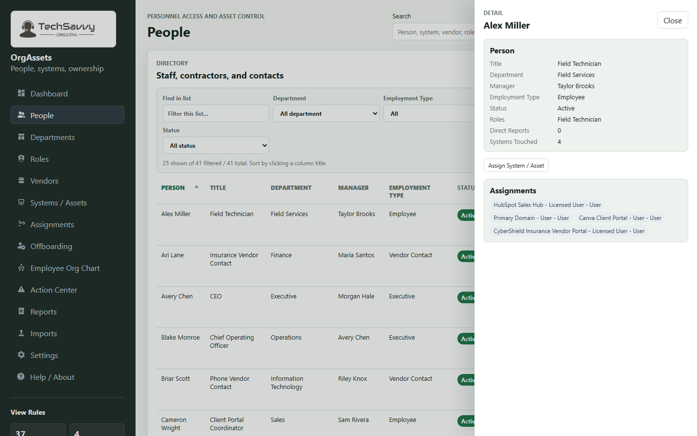
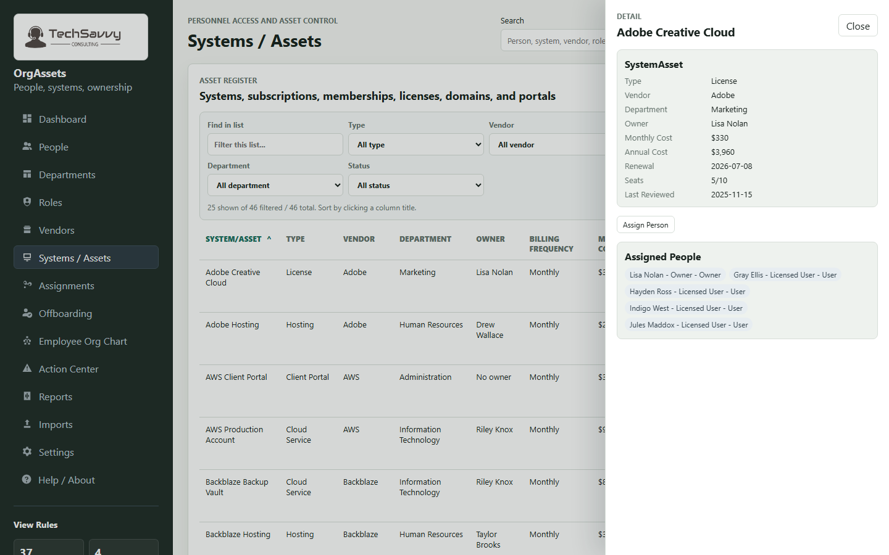
How details are used
- Close returns the full screen to the underlying table, report, or org chart.
- People details show department, manager, employment type, status, roles, direct reports, and systems touched.
- System details show vendor, owner, department, cost, renewal, seats, and active assigned people.
- Department, vendor, and role details summarize connected people, systems, and assignments.
- Assignment details show the person, system, assignment type, access level, dates, and status.
14. Action Center
Action Center generates cleanup work from business rules. It is the fastest way to find owner gaps, renewal risk, stale reviews, unused seats, former staff access, and contractor access past end date.
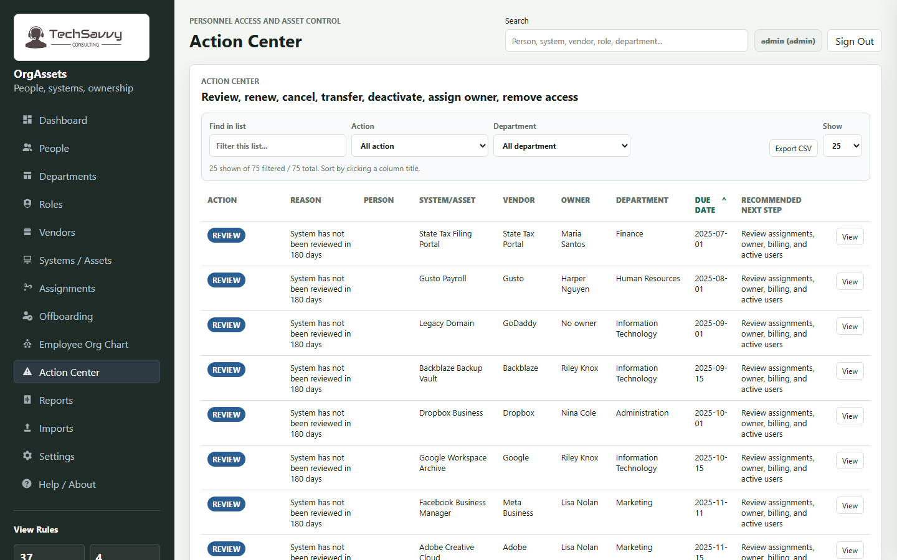
Cleanup rules
- Assign owner appears when an active system has no owner.
- Renew appears when renewal dates are near or overdue based on the View Rules renewal window.
- Review appears when a system has not been reviewed recently.
- Remove access appears when former staff or ended contractors still have active assignments.
- Reduce seats appears when purchased seats exceed active assigned seats.
15. Reports
Reports answer the main audit and operating questions. Report values are clickable, visual breakdowns are clickable, table filters are report-specific, and Export PDF follows the active filters, search, department selector, and multi-column sort.
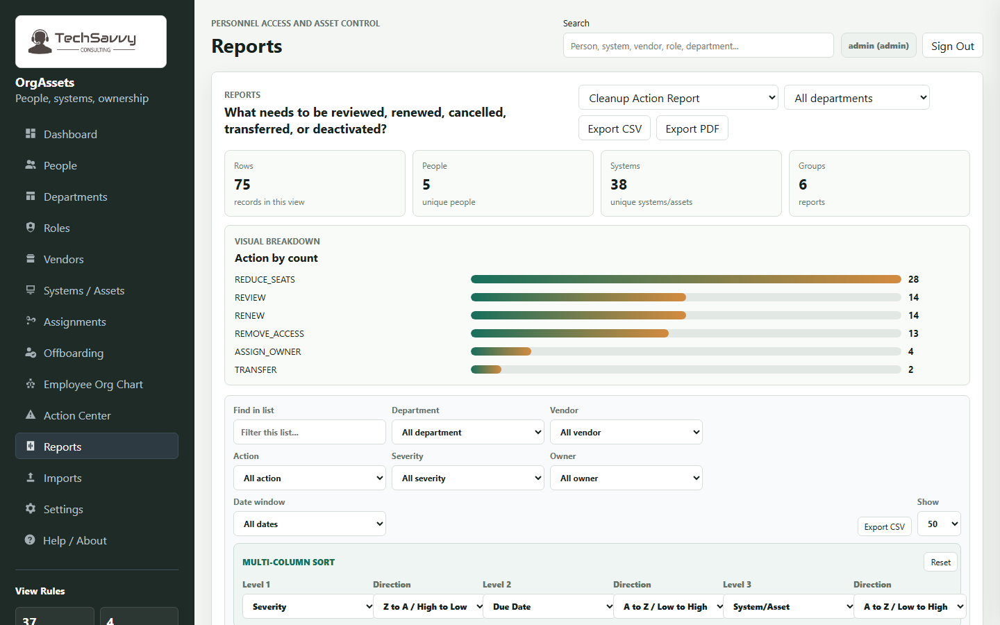
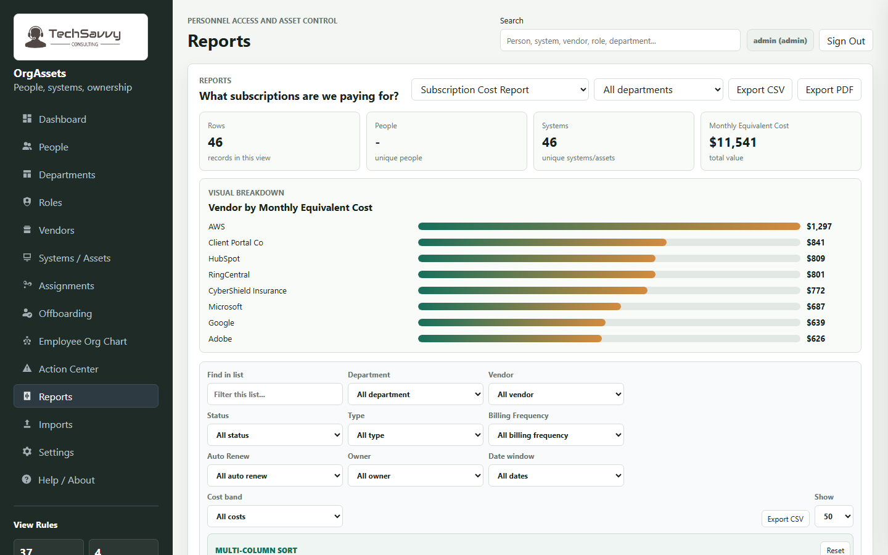
Available reports
- Staff Structure and Org Chart Roster
- Systems Touched by Person and Person Asset Summary
- Subscription Cost and Department Monthly Cost
- Former Staff Access and Contractor Access
- Vendor Renewal and No Owner
- Admin Access by Role and Cleanup Action
Report tools
- Department selector filters rows that have a department.
- Report filters appear when useful, including vendor, status, type, role, access level, date window, cost band, action, and severity.
- Multi-column sort supports up to three sort levels. Header clicks set the primary sort, and Shift-click adds another sort level.
- Export CSV exports the current sorted and filtered report rows without hidden metadata.
- Export PDF creates a clean branded report PDF using the current sorted and filtered rows, with an executive summary page first.
16. Imports
Imports support both technical templates and section export files. That means you can export People, Systems / Assets, Assignments, Departments, Roles, or Vendors from their section and import that same CSV back through the matching record type.
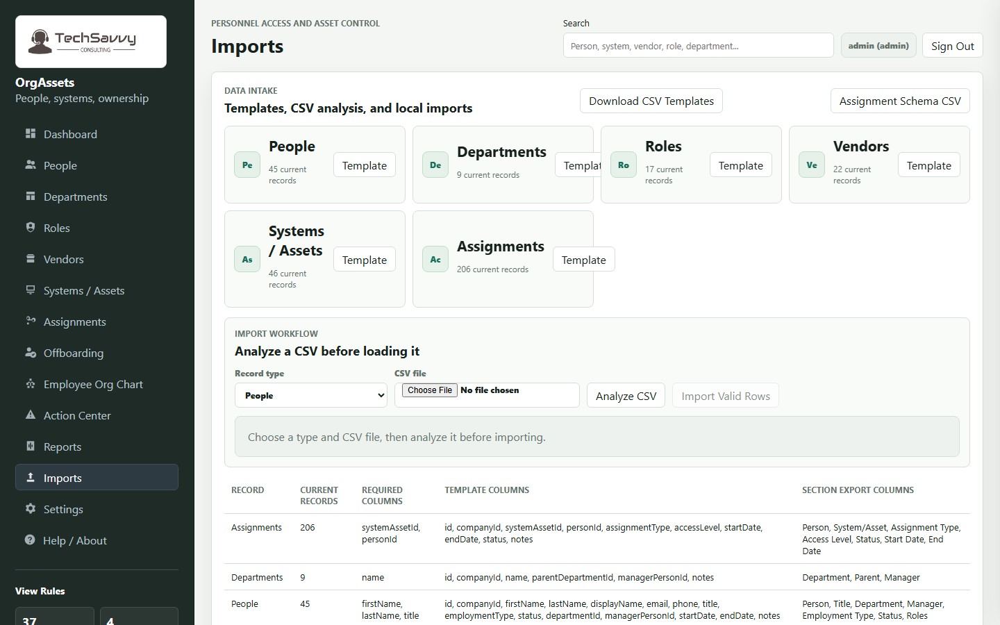
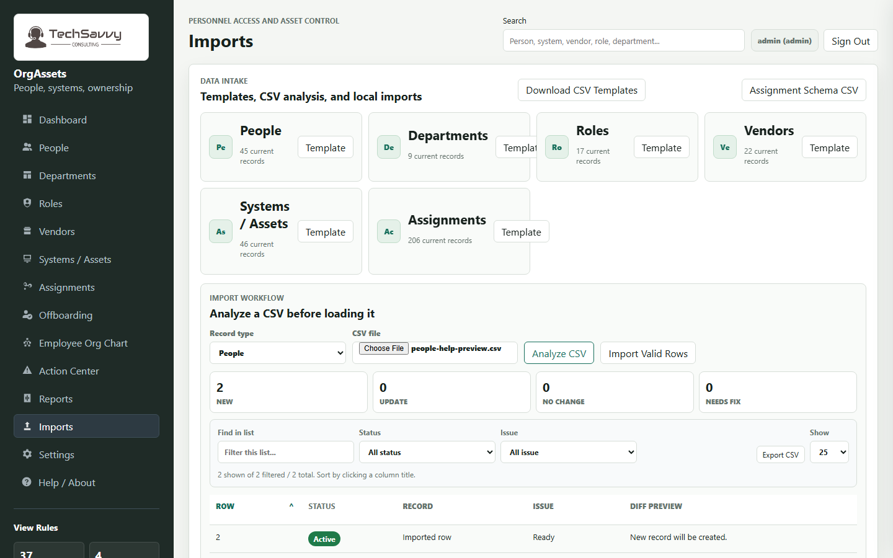
Import workflow
- Download templates for raw import columns such as IDs and internal field names.
- Analyze before import to preview New, Update, No change, and Needs Fix rows before loading anything.
- Diff Review shows which fields will change so imported files can be checked before data is applied.
- Section export columns are accepted. Friendly names such as Person, Department, Vendor, Owner, System/Asset, Roles, Monthly Cost, Annual Cost, and Seats are mapped back to records.
- Existing records are merged. Reimporting a section export updates matching records by ID, email, display name, system name, vendor name, or assignment relationship instead of creating duplicates.
- Unsafe IDs are rejected. Imported IDs must use a safe format so imported files cannot break page attributes.
- Load dependencies first. People, systems, departments, vendors, and roles should exist before assignments are imported.
17. Export Locations
There is no standalone exports area. Exports live where the work happens.
- Tables have Export CSV buttons in their toolbar.
- Reports have Export CSV and Export PDF buttons. PDF output uses report branding and respects filters and sort order.
- Employee Org Chart has Printable View with Full and Simple PDF modes.
- Offboarding is admin-only and has Export Checklist PDF for a selected person.
- Assignments has Export Standard CSV, and Imports has Assignment Schema CSV.
- Settings has admin-only Folder Backup, which downloads the full working host folder ZIP and browser-data snapshot.
18. Settings
Settings control report branding, layout defaults, list limits, user accounts, backups, demo data, and the boundaries for what should and should not be stored in OrgAssets.
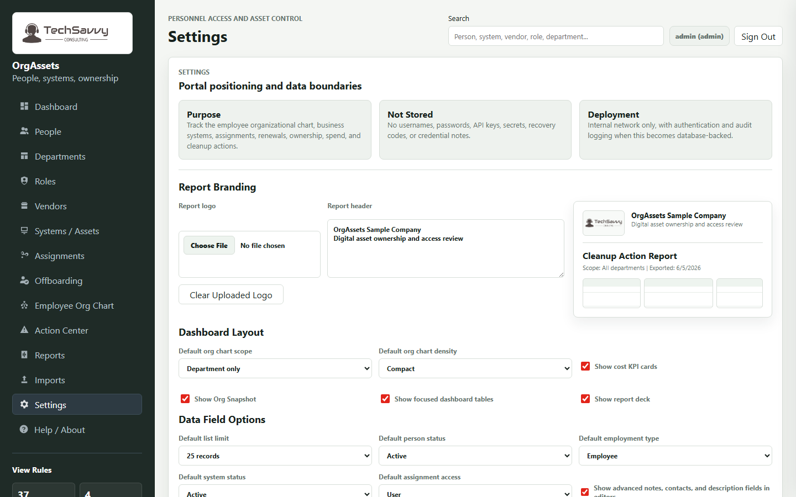
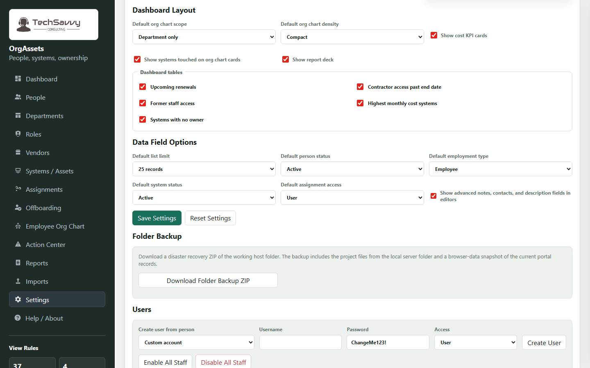
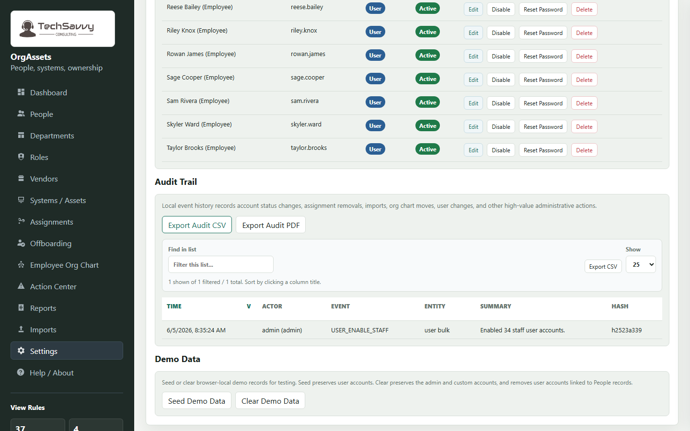
Settings workflow
- Report Branding uploads a logo and customizes the PDF report header. The preview shows how reports will look.
- Dashboard Layout sets default org chart scope, chart density, Org Snapshot visibility, cost KPI visibility, individual dashboard table visibility, and report deck visibility. Visible dashboard tables automatically move up to fill open dashboard positions.
- Data Field Options sets default row limit, person status, employment type, system status, assignment access, and advanced field visibility.
- Audit Trail exports local event history as CSV or PDF, including hash-chain markers for integrity review.
- Portal Boundaries define the purpose of the portal and remind users not to store credentials.
19. Users, Demo Data, and Folder Backup
Admin users manage accounts and disaster-recovery exports from Settings. Standard users can review the portal but are limited away from Settings, Imports, Offboarding, backups, demo data resets, and business-data editing.
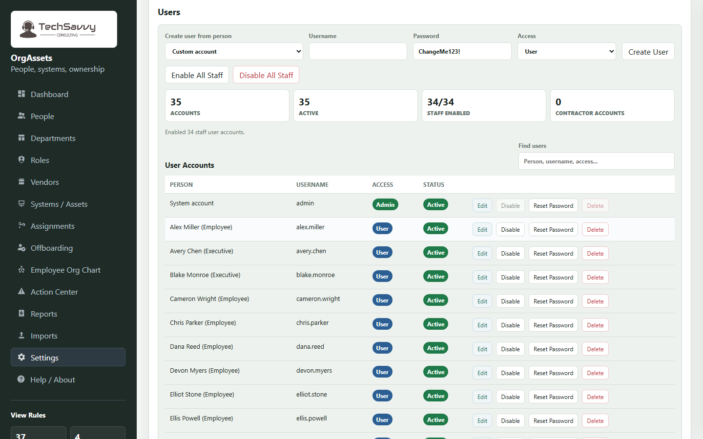
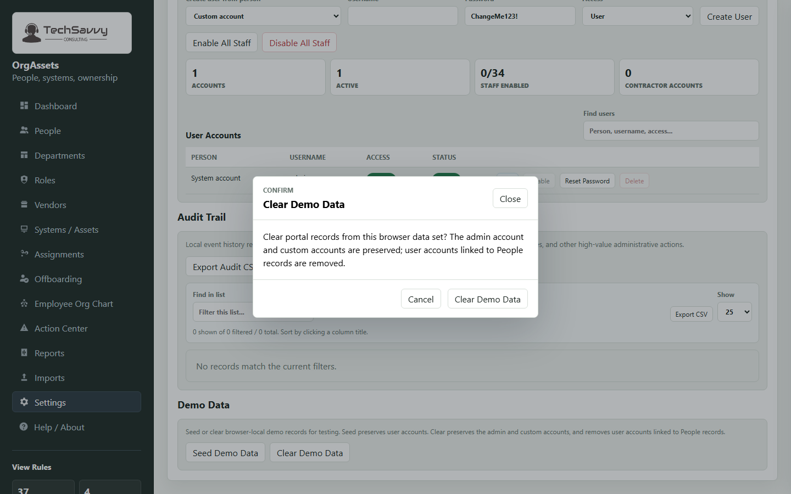
Admin workflow
- Create users from people. Select an existing person and create a portal account.
- Enable or disable all staff users. Create or disable staff login accounts in bulk. Contractors, vendor contacts, custom accounts, and the current signed-in account are not included in the bulk action.
- Edit users. Change username, person link, role, status, and password.
- Admin role has access to all sections, add/edit/delete controls, Imports, Offboarding, Users, Audit Trail exports, Folder Backup, demo data reset, report branding, and portal defaults.
- User role can sign in, search, review dashboards, people, departments, roles, vendors, systems/assets, assignments, org chart, action center, reports, detail panels, and available section exports. Users cannot change business data or access admin maintenance areas.
- Folder Backup downloads a disaster-recovery ZIP of the working portal folder plus a current browser-data snapshot.
- Seed Demo Data and Clear Demo Data are admin-only actions at the bottom of Settings and preserve existing user accounts.
20. Security Guidance
OrgAssets contains sensitive operational context: people, contractors, systems, vendors, access assignments, privileged roles, renewal dates, spend, ownership, and cleanup issues. Treat it as internal infrastructure.
Default server binding is same-computer access. Use demo or sanitized data unless the machine and users are trusted.
Use firewall scoping, VPN or internal DNS, HTTPS, folder backups, and role-based accounts before LAN use.
Move users, sessions, authorization, audit history, backups, and password hashing to trusted server/database services.
LAN-only access reduces exposure, but it does not replace authentication, authorization, audit logging, backups,
HTTPS, or operational security.
21. Troubleshooting
- Cannot sign in: confirm the account is active and the username is spelled correctly.
- Settings or Imports missing: sign in as an admin account.
- Org chart feels crowded: use Fit, reduce card details, use department scope, or use the Simple printable view.
- PDF report logo is missing: upload a logo in Settings, or use the default TechSavvy logo.
- Import rows fail: analyze the CSV and check required fields. For section exports, choose the matching record type.
- Backup fails: confirm you are signed in as an admin, then contact your OrgAssets administrator or support team.
22. About Us
This OrgAssets portal was developed for practical, day-to-day people-to-systems management: searchable staff and contractor records, org chart structure, systems/assets, access assignments, cleanup actions, imports, folder backups, and branded PDF reporting in one local portal.